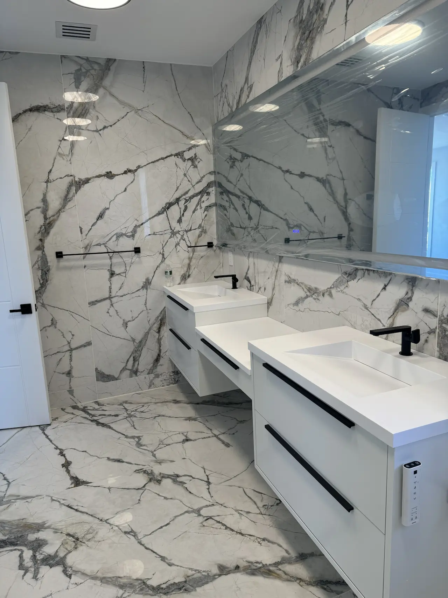

Tile Installation
{{ site.company | default: site.title }} installs wall and floor tiles with millimeter-accurate alignment: straight grout lines, even spacing, and a durable waterproof finish — ready to use, no mess.
What you get
- Laser-level alignment — crisp grout lines without lippage.
- Waterproofing — membranes & sealing for wet zones.
- Clean cuts — around outlets, niches, and plumbing.
- Ready-to-use finish — we clean up and hand over spotless.
Recent work

Even grout lines
Consistent spacers, cross-check with laser, and symmetric terminations at edges.
No lippage
Subfloor leveling and clip systems ensure flush surfaces without trip edges.


Clean terminations
Balanced cuts, metal trims, and properly sealed edges for a premium look.
Process
- Assessment & layout — measure, choose pattern, define reference lines.
- Prep & waterproofing — substrate repair, membranes, primers.
- Setting & grouting — clips where needed, correct trowel size, sealed grout.
FAQ
Do you install large-format tiles?
Yes. We use leveling clips and correct trowel/back-buttering to eliminate lippage.
Is waterproofing included?
Wet zones get membrane treatment and sealed corners; this is part of our scope.
How fast can you start?
Typically within 2–5 days after confirmation and material delivery.